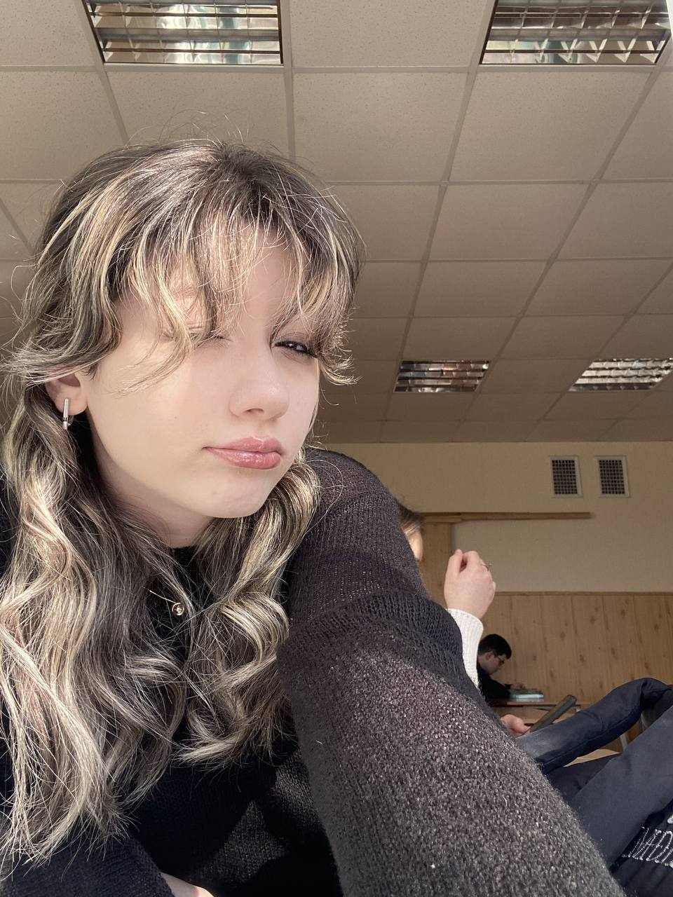
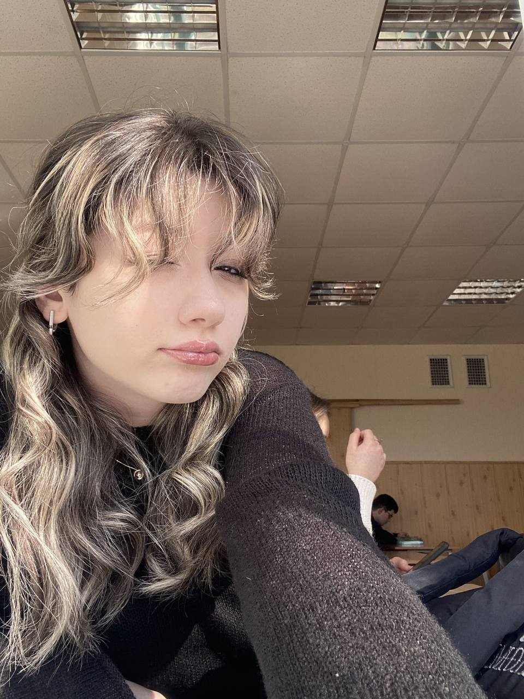

Моей любимой Миле
Добро пожаловать на страницу, посвященную самой лучшей девочке на свете!
С Днем Рождения, дорогая! Ты самая лучшая!
Миля немного о себе
сегодня в кофейне я встретила 12-ти летнюю себя.
она пришла пораньше, чтобы никого не обидеть, а я опоздала. она сказала, что кофе слишком горький и заказала сладкий чай, а я взяла крепкие приключений, о работе мечты где она будет спасать всем жизни и помогать людям, а я ностальгирую по прошлому и просто мечтаю не зависеть от учёбы.
в её глазах я увидела печаль, после того как она поняла, что станет мной, а я решила не расстраивать её и не рассказывать то, через что ей придётся пройти.
мы сидели напротив друг друга, разделенные годами опыта, и я поняла, как изменились мои мечты и приоритеты.
Что о ней говорят другие
****
Погнали. Ты выглядишь мило, ассоциируется с чем-то форфоровым и пушистым одновременно. Людям явно нравится то, что ты очень обоятельная. Понятно, естественно, что на одной внешности все не заканчивается - ты притягиваешь к себе своим добродушием, готовностью к новым знакомствам и позитивностью. Ты очень даже социализированный человек, иногда это приводит тебя к моральному истощению и глубокому разочарованию. Мне кажется, что тебе хочется, чтобы люди относились к тебе прямо также, как и ты относишься к ним, но к сожалению, это не всегда возможно. Тебе трудно концентрировать свое внимание, но это не значит, что ты не справляешься с тем, что от тебя требуется. С тобой всегда как на эмоциональной пороховой бочке. - у тебя бесприрывная и резкая смена эмоций. Зато это причина того, что любое времяпровождение с тобой становится чем-то незабываемым. Ты крайне прямолинейна и в тот же момент часто умалчиваешь что-то, чтобы не обидеть кого-то или не разозлить. - это многим может не нравиться, но это выбор каждого. Иногда ты кажешься эгоистичной, но так только кажется: на самом деле ты всегда стараешься понимать человека, какого бы мнения ты о нем ни была. Ты фотогенична, я не удивлюсь, если ты станешь моделью. Привычки? Что насчёт говорить притянутым за уши сарказмом, причем так, что не поймет только пенек с глазками? Заправлять волосы за ухо, закатывая глаза, тоже в шуточной форме? Искать Лауру (и не только) глазами перед тем, как засмеяться?
Я не знаю как к тебе относятся окружающие. Но большинство от тебя без ума, я более чем уверена.
****
ты ведёшь себя как котенок.иногда тебе хочется ласки и тепла,а иногда ты хочешь покоя и тишины, чтобы тебя никто не трогал и не беспокоил.у тебя очень красивая душа как и сама ты.твой характер ассоциируется с ромашковым чаем,осенним дождём, запахом книг и темным горьким шоколадом,ты бываешь не предсказуема,у тебя не тяжёлый характер.тебя можно понять и прочитать изнутри,но не все хотят сделать это,не все знают насколько ты можешь быть собой и какова ты на самом деле с тем или иным человеком.ты очень интересная,тебя интересно слушать,ты интересно мыслишь и вообще если ты раскроешься ты какая-то своя, делаешь всё по другому—как что-то особенное.ты очень хороший и понимающий человек,стоит просто поговорить с тобой как становится легче,ты душевно успокаивающая.с тобой правда очень хорошо.мне нравится с тобой общаться,хоть мы и не часто это делаем.ты одна из тех кто действительно искренне любит, доверяет и понимает.ты можешь заменять как и солнце так и луну,ярко светить и показывать что все не так тускло как кажется.и также ярко светить, когда уже полностью видишь тьму и обрыв,ты продолжаешь выстраивать дорогу и показывать что есть то,что может заставить видеть и идти.ты дорога мне
****
1) как ты себя ведешь?
ты очень добрая, даже слишком. ты готова всегда всем помочь в трудную минуту, поддержать всячески, убедить в чем-то хорошем.
2) как ты выглядишь со стороны?
ты выглядишь как маленькая миленькая девочка, которую так и хочется обнять и выслушать. в последние время, видно что ты очень сильно физически устаешь, от это можно понять.. выдержать такую нагрузку (ввиде работы, егэ, репетов, репетиций, школы и тд., это очень трудно.. (я в тебя верю все будет хорошо, и ты со всем справишься!!!)) очень трудно(
3) какой у тебя характер?
у тебя очень простой характер, но при этом трудный (я не знаю, как описать)
4) привычки
ты когда фоткаешь закрываешь свое лицо (так делать не надо)
5) заметные твои качества
доброта, честность, красота
6) хотят ли люди действительно с тобой общаться?
да
****
Увлечения
- Фотография
- Чтение книг
- Кофе
- Музыка


Фотогалерея
 
